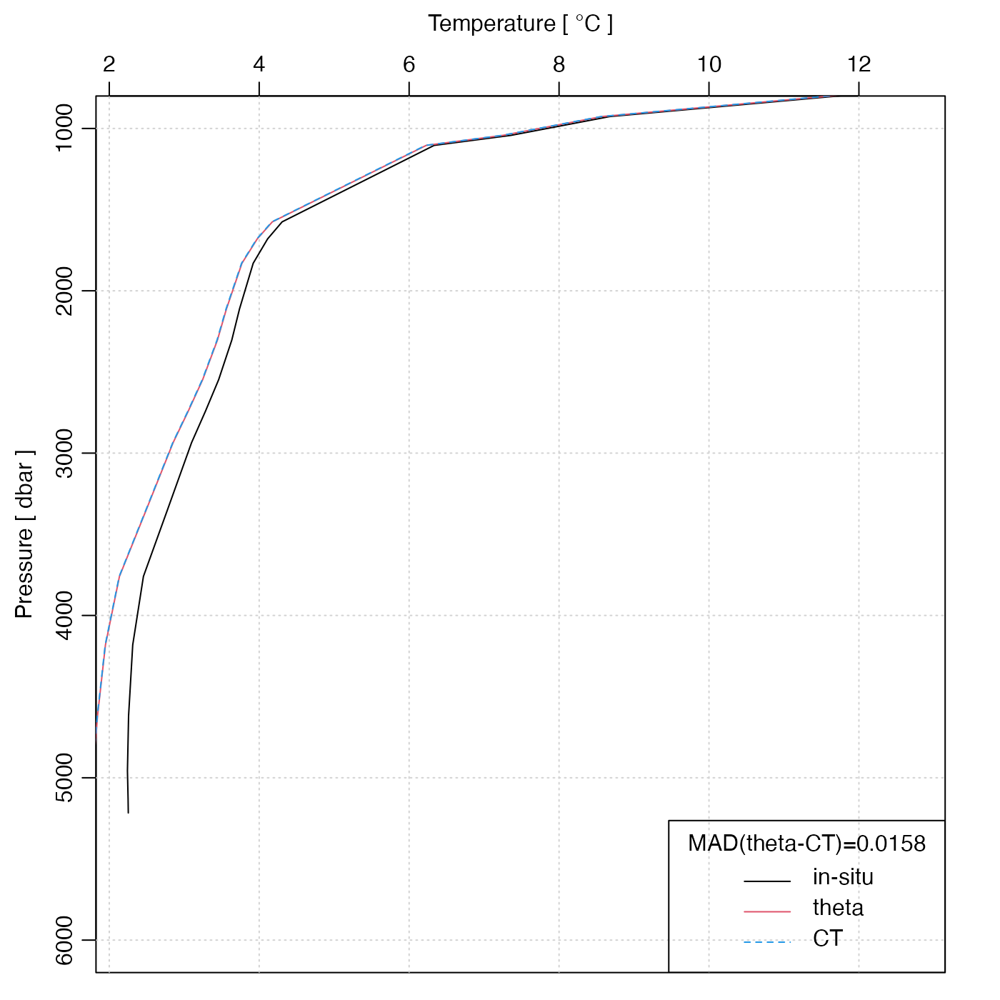

Compute the potential temperature of seawater, denoted \(\theta\)
in the UNESCO system, and pt in the GSW system.
swTheta(
salinity,
temperature = NULL,
pressure = NULL,
referencePressure = 0,
longitude = NULL,
latitude = NULL,
eos = getOption("oceEOS", default = "gsw")
)either salinity (PSU) (in which case temperature and
pressure must be provided) or an oce object (in which
case salinity, etc. are inferred from the object).
in-situ temperature (\(^\circ\)C), defined
on the ITS-90 scale; see “Temperature units” in the documentation for
swRho(), and the examples below.
pressure (dbar)
reference pressure (dbar)
longitude of observation (only used if eos="gsw";
see ‘Details’).
latitude of observation (only used if eos="gsw"; see
‘Details’).
equation of state, either "unesco" (references 1 and 2) or "gsw"
(references 3 and 4).
Potential temperature (\(^\circ\)C) of seawater, referenced
to pressure referencePressure.
Different formulae are used depending on the equation of state. If eos
is "unesco", the method of Fofonoff et al. (1983) is used
(see references 1 and 2).
Otherwise, swTheta uses gsw::gsw_pt_from_t() from
the gsw package.
If the first argument is a ctd or section object, then values
for salinity, etc., are extracted from it, and used for the calculation, and
the corresponding arguments to the present function are ignored.
Fofonoff, P. and R. C. Millard Jr, 1983. Algorithms for computation of fundamental properties of seawater. Unesco Technical Papers in Marine Science, 44, 53 pp
Gill, A.E., 1982. Atmosphere-ocean Dynamics, Academic Press, New York, 662 pp.
IOC, SCOR, and IAPSO (2010). The international thermodynamic equation of seawater-2010: Calculation and use of thermodynamic properties. Technical Report 56, Intergovernmental Oceanographic Commission, Manuals and Guide.
McDougall, T.J. and P.M. Barker, 2011: Getting started with TEOS-10 and the Gibbs Seawater (GSW) Oceanographic Toolbox, 28pp., SCOR/IAPSO WG127, ISBN 978-0-646-55621-5.
Other functions that calculate seawater properties:
T68fromT90(),
T90fromT48(),
T90fromT68(),
computableWaterProperties(),
locationForGsw(),
swAbsoluteSalinity(),
swAlphaOverBeta(),
swAlpha(),
swBeta(),
swCSTp(),
swConservativeTemperature(),
swDepth(),
swDynamicHeight(),
swLapseRate(),
swN2(),
swPressure(),
swRho(),
swRrho(),
swSCTp(),
swSR(),
swSTrho(),
swSigma0(),
swSigma1(),
swSigma2(),
swSigma3(),
swSigma4(),
swSigmaTheta(),
swSigmaT(),
swSigma(),
swSoundAbsorption(),
swSoundSpeed(),
swSpecificHeat(),
swSpice(),
swSstar(),
swTFreeze(),
swTSrho(),
swThermalConductivity(),
swViscosity(),
swZ()
library(oce)
## test value from Fofonoff et al., 1983
stopifnot(abs(36.8818748026 - swTheta(40, T90fromT68(40), 10000, 0, eos="unesco")) < 0.0000000001)
# Example from a cross-Atlantic section
data(section)
stn <- section[['station', 70]]
plotProfile(stn, 'theta', ylim=c(6000, 1000))
lines(stn[['temperature']], stn[['pressure']], lty=2)
legend("bottomright", lty=1:2,
legend=c("potential", "in-situ"),
bg='white', title="Station 70")
